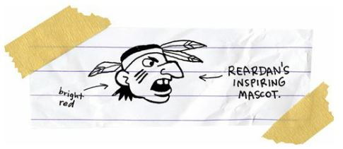
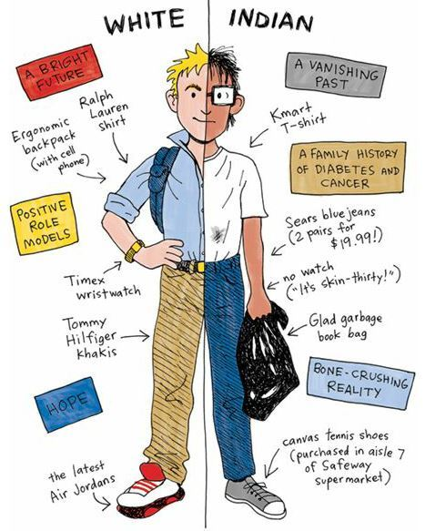
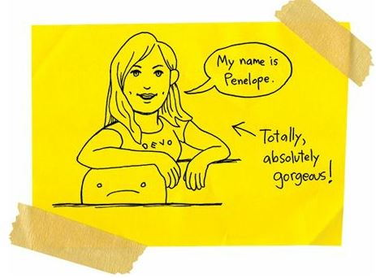
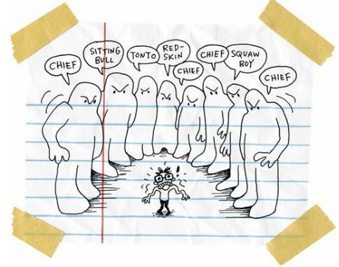

How to Fight Monsters
The next morning, Dad drove me the twenty-two miles to Reardan.
“I’m scared,” I said.
“I’m scared, too,” Dad said.
He hugged me close. His breath smelled like mouthwash and lime vodka.
“You don’t have to do this,” he said. “You can always go back to the rez school.”
“No,” I said. “I have to do this.”
Can you imagine what would have happened to me if I’d turned around and gone back to the rez school?
I would have been pummeled. Mutilated. Crucified.
You can’t just betray your tribe and then change your mind ten minutes later. I was on a one-way bridge. There was no way to turn around, even if I wanted to.
“Just remember this,” my father said. “Those white people aren’t better than you.”
But he was so wrong. And he knew he was wrong. He was the loser Indian father of a loser Indian son living in a world built for winners.
But he loved me so much. He hugged me even closer.
“This is a great thing,” he said. “You’re so brave. You’re a warrior.”
It was the best thing he could have said.
“Hey, here’s some lunch money,” he said and handed me a dollar.
We were poor enough to get free lunch, but I didn’t want to be the only Indian and a sad sack who needed charity.
“Thanks, Dad,” I said.
“I love you,” he said.
“I love you, too.”
I felt stronger so I stepped out of the car and walked to the front door. It was locked.
So I stood alone on the sidewalk and watched my father drive away. I hoped he’d drive right home and not stop in a bar and spend whatever money he had left.
I hoped he’d remember to come back and pick me up after school.
I stood alone at the front door for a few very long minutes.
It was still early and I had a black eye from Rowdy’s good-bye punch. No, I had a purple, blue, yellow, and black eye. It looked like modern art.
Then the white kids began arriving for school. They surrounded me. Those kids weren’t just white. They were translucent. I could see the blue veins running through their skin like rivers.
Most of the kids were my size or smaller, but there were ten or twelve monster dudes. Giant white guys. They looked like men, not boys. They had to be seniors. Some of them looked like they had to shave two or three times a day.
They stared at me, the Indian boy with the black eye and swollen nose, my going-away gifts from Rowdy. Those white kids couldn’t believe their eyes. They stared at me like I was Bigfoot or a UFO. What was I doing at Reardan, whose mascot was an Indian, thereby making me the only other Indian in town?

So what was I doing in racist Reardan, where more than half of every graduating class went to college? Nobody in my family had ever gone near a college.
Reardan was the opposite of the rez. It was the opposite of my family. It was the opposite of me. I didn’t deserve to be there. I knew it; all of those kids knew it. Indians don’t deserve shit.

So, feeling worthless and stupid, I just waited. And pretty soon, a janitor opened the front door and all of the other kids strolled inside.
I stayed outside.
Maybe I could just drop out of school completely. I could go live in the woods like a hermit.
Like a real Indian.
Of course, since I was allergic to pretty much every plant that grew on earth, I would have been a real Indian with a head full of snot.
“Okay,” I said to myself. “Here I go.”
I walked into the school, made my way to the front office, and told them who I was.
“Oh, you’re the one from the reservation,” the secretary said.
“Yeah,” I said.
I couldn’t tell if she thought the reservation was a good or bad thing.
“My name is Melinda,” she said. “Welcome to Reardan High School. Here’s your schedule, a copy of the school constitution and moral code, and a temporary student ID. We’ve got you assigned to Mr. Grant for homeroom. You better hustle on down there. You’re late.”
“Ah, where is that?” I asked.
“We’ve only got one hallway here,” she said and smiled. She had red hair and green eyes and was kind of sexy for an old woman. “It’s all the way down on the left.”
I shoved the paperwork into my backpack and hustled down to my homeroom.
I paused a second at the door and then walked inside.
Everybody, all of the students and the teacher, stopped to stare at me.
They stared hard.
Like I was bad weather.
“Take your seat,” the teacher said. He was a muscular guy. He had to be a football coach.
I walked down the aisle and sat in the back row and tried to ignore all the stares and whispers, until a blond girl leaned over toward me.
Penelope!

Yes, there are places left in the world where people are named Penelope!
I was emotionally erect.
“What’s your name?” Penelope asked.
“Junior,” I said.
She laughed and told her girlfriend at the next desk that my name was Junior. They both laughed. Word spread around the room and pretty soon everybody was laughing.
They were laughing at my name.
I had no idea that Junior was a weird name. It’s a common name on my rez, on any rez. You walk into any trading post on any rez in the United States and shout, “Hey, Junior!” and seventeen guys will turn around.
And three women.
But there were no other people named Junior in Reardan, so I was being laughed at because I was the only one who had that silly name.
And then I felt smaller because the teacher was taking roll and he called out my name name.
“Arnold Spirit,” the teacher said.
No, he yelled it.
He was so big and muscular that his whisper was probably a scream.
“Here,” I said as quietly as possible. My whisper was only a whisper.
“Speak up,” the teacher said.
“Here,” I said.
“My name is Mr. Grant,” he said.
“I’m here, Mr. Grant.”
He moved on to other students, but Penelope leaned over toward me again, but she wasn’t laughing at all. She was mad now.
“I thought you said your name was Junior,” Penelope said.
She accused me of telling her my real name. Well, okay, it wasn’t completely my real name. My full name is Arnold Spirit Jr. But nobody calls me that. Everybody calls me Junior. Well, every other Indian calls me Junior.
“My name is Junior,” I said. “And my name is Arnold. It’s Junior and Arnold. I’m both.”
I felt like two different people inside of one body.
No, I felt like a magician slicing myself in half, with Junior living on the north side of the Spokane River and Arnold living on the south.
“Where are you from?” she asked.
She was so pretty and her eyes were so blue.
I was suddenly aware that she was the prettiest girl I had ever seen up close. She was movie star pretty.
“Hey,” she said. “I asked you where you’re from.”
Wow, she was tough.
“Wellpinit,” I said. “Up on the rez, I mean, the reservation.”
“Oh,” she said. “That’s why you talk so funny.”
And yes, I had that stutter and lisp, but I also had that singsong reservation accent that made everything I said sound like a bad poem.
Man, I was freaked.
I didn’t say another word for six days.
And on the seventh day, I got into the weirdest fistfight of my life. But before I tell you about the weirdest fistfight of my life, I have to tell you:
THE UNOFFICIAL AND UNWRITTEN
(but you better follow them or you’re going to get beaten twice as hard)
SPOKANE INDIAN RULES OF FISTICUFFS:
1. IF SOMEBODY INSULTS YOU, THEN YOU HAVE TO FIGHT HIM.
2. IF YOU THINK SOMEBODY IS GOING TO INSULT YOU, THEN YOU HAVE TO FIGHT HIM.
3. IF YOU THINK SOMEBODY IS THINKING ABOUT INSULTING YOU, THEN YOU HAVE TO FIGHT HIM.
4. IF SOMEBODY INSULTS ANY OF YOUR FAMILY OR FRIENDS, OR IF YOU THINK THEY’RE GOING TO INSULT YOUR FAMILY OR FRIENDS, OR IF YOU THINK THEY’RE THINKING ABOUT INSULTING YOUR FAMILY OR FRIENDS, THEN YOU HAVE TO FIGHT HIM.
5. YOU SHOULD NEVER FIGHT A GIRL, UNLESS SHE INSULTS YOU, YOUR FAMILY, OR YOUR FRIENDS, THEN YOU HAVE TO FIGHT HER.
6. IF SOMEBODY BEATS UP YOUR FATHER OR YOUR MOTHER, THEN YOU HAVE TO FIGHT THE SON AND/OR DAUGHTER OF THE PERSON WHO BEAT UP YOUR MOTHER OR FATHER.
7. IF YOUR MOTHER OR FATHER BEATS UP SOMEBODY, THEN THAT PERSON’S SON AND/OR DAUGHTER WILL FIGHT YOU.
8. YOU MUST ALWAYS PICK FIGHTS WITH THE SONS AND/OR DAUGHTERS OF ANY INDIANS WHO WORK FOR THE BUREAU OF INDIAN AFFAIRS.
9. YOU MUST ALWAYS PICK FIGHTS WITH THE SONS AND/OR DAUGHTERS OF ANY WHITE PEOPLE WHO LIVE ANYWHERE ON THE RESERVATION.
10. IF YOU GET IN A FIGHT WITH SOMEBODY WHO IS SURE TO BEAT YOU UP, THEN YOU MUST THROW THE FIRST PUNCH, BECAUSE IT’S THE ONLY PUNCH YOU’LL EVER GET TO THROW.
11. IN ANY FIGHT, THE LOSER IS THE FIRST ONE WHO CRIES.
I knew those rules. I’d memorized those rules. I’d lived my life by those rules. I got into my first fistfight when I was three years old, and I’d been in dozens since.
My all-time record was five wins and one hundred and twelve losses.
Yes, I was a terrible fighter.
I was a human punching bag.
I lost fights to boys, girls, and kids half my age.
One bully, Micah, made me beat up myself. Yes, he made me punch myself in the face three times. I am the only Indian in the history of the world who ever lost a fight with himself.
Okay, so now that you know about the rules, then I can tell you that I went from being a small target in Wellpinit to being a larger target in Reardan.
Well, let’s get something straight. All of those pretty, pretty, pretty, pretty white girls ignored me. But that was okay. Indian girls ignored me, too, so I was used to it.
And let’s face it, most of the white boys ignored me, too. But there were a few of those Reardan boys, the big jocks, who paid special attention to me. None of those guys punched me or got violent. After all, I was a reservation Indian, and no matter how geeky and weak I appeared to be, I was still a potential killer. So mostly they called me names. Lots of names.

And yeah, those were bad enough names. But I could handle them, especially when some huge monster boy was insulting me. But I knew I’d have to put a stop to it eventually or I’d always be known as “Chief” or “Tonto” or “Squaw Boy.”
But I was scared.
I wasn’t scared of fistfighting with those boys. I’d been in plenty of fights. And I wasn’t scared of losing fights with them, either. I’d lost most every fight I’d been in. I was afraid those monsters were going to kill me.
And I don’t mean “kill” as in “metaphor.” I mean “kill” as in “beat me to death.”
So, weak and poor and scared, I let them call me names while I tried to figure out what to do. And it might have continued that way if Roger the Giant hadn’t taken it too far.
It was lunchtime and I was standing outside by the weird sculpture that was supposed to be an Indian. I was studying the sky like I was an astronomer, except it was daytime and I didn’t have a telescope, so I was just an idiot.
Roger the Giant and his gang of giants strutted over to me.
“Hey, Chief,” Roger said.
It seemed like he was seven feet tall and three hundred pounds. He was a farm boy who carried squealing pigs around like they were already thin slices of bacon.
I stared at Roger and tried to look tough. I read once that you can scare away a charging bear if you wave your arms and look big. But I figured I’d just look like a terrified idiot having an arm seizure.
“Hey, Chief,” Roger said. “You want to hear a joke?”
“Sure,” I said.
“Did you know that Indians are living proof that niggers fuck buffalo?”
I felt like Roger had kicked me in the face. That was the most racist thing I’d ever heard in my life.
Roger and his friends were laughing like crazy. I hated them. And I knew I had to do something big. I couldn’t let them get away with that shit. I wasn’t just defending myself. I was defending Indians, black people, and buffalo.
So I punched Roger in the face.
He wasn’t laughing when he landed on his ass. And he wasn’t laughing when his nose bled like red fireworks.
I struck some fake karate pose because I figured Roger’s gang was going to attack me for bloodying their leader.
But they just stared at me.
They were shocked.
“You punched me,” Roger said. His voice was thick with blood. “I can’t believe you punched me.”
He sounded insulted.
He sounded like his poor little feelings had been hurt.
I couldn’t believe it.
He acted like he was the one who’d been wronged.
“You’re an animal,” he said.
I felt brave all of a sudden. Yeah, maybe it was just a stupid and immature school yard fight. Or maybe it was the most important moment of my life. Maybe I was telling the world that I was no longer a human target.
“You meet me after school right here,” I said.
“Why?” he asked.
I couldn’t believe he was so stupid.
“Because we’re going to finish this fight.”
“You’re crazy,” Roger said.
He got to his feet and walked away. His gang stared at me like I was a serial killer, and then they followed their leader.
I was absolutely confused.
I had followed the rules of fighting. I had behaved exactly the way I was supposed to behave. But these white boys had ignored the rules. In fact, they followed a whole other set of mysterious rules where people apparently DID NOT GET INTO FISTFIGHTS.
“Wait,” I called after Roger.
“What do you want?” Roger asked.
“What are the rules?”
“What rules?”
I didn’t know what to say, so I just stood there red and mute like a stop sign. Roger and his friends disappeared.
I felt like somebody had shoved me into a rocket ship and blasted me to a new planet. I was a freaky alien and there was absolutely no way to get home.